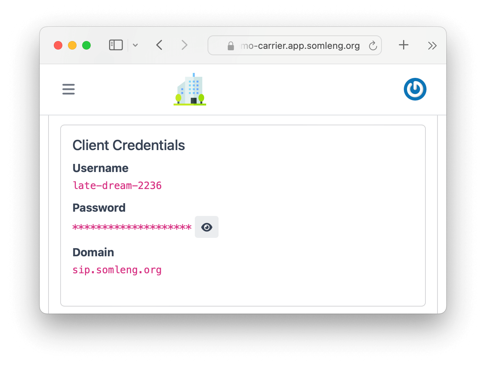
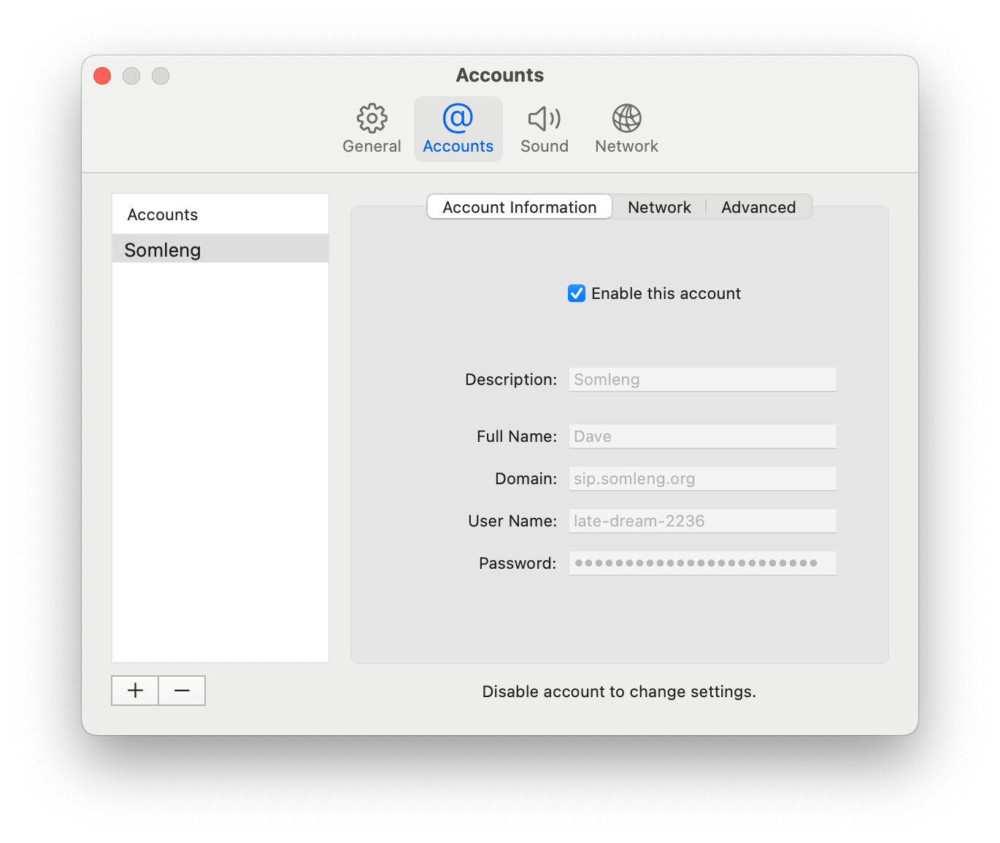
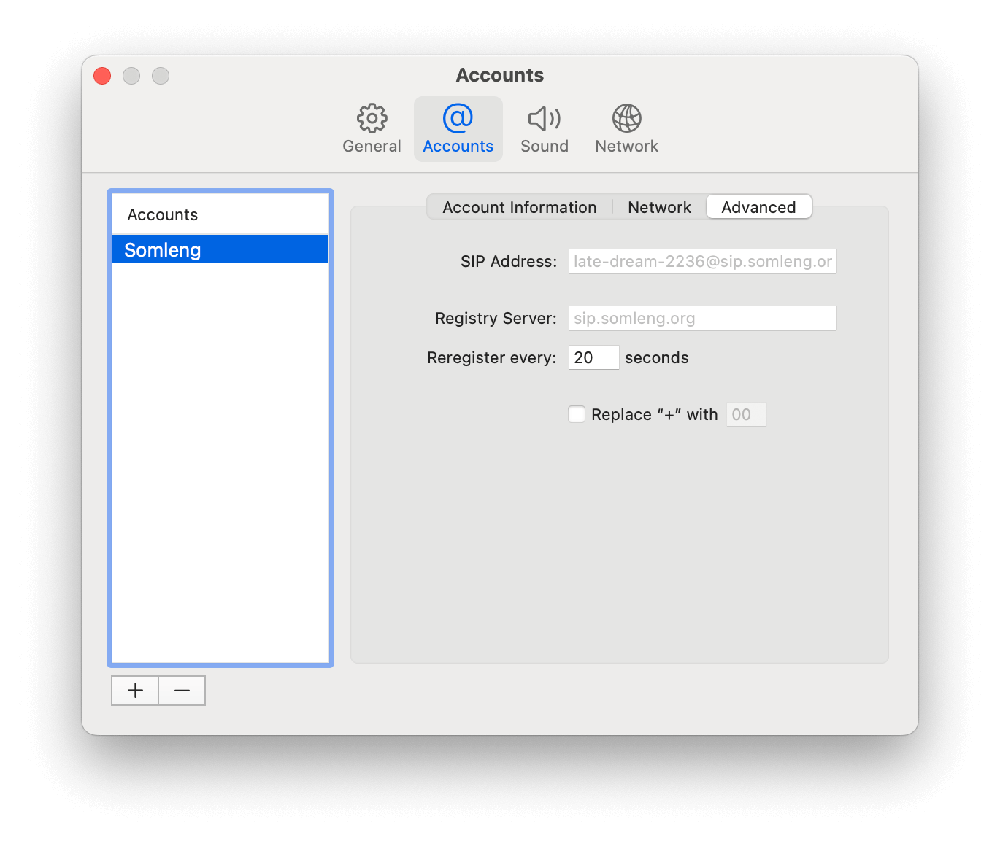
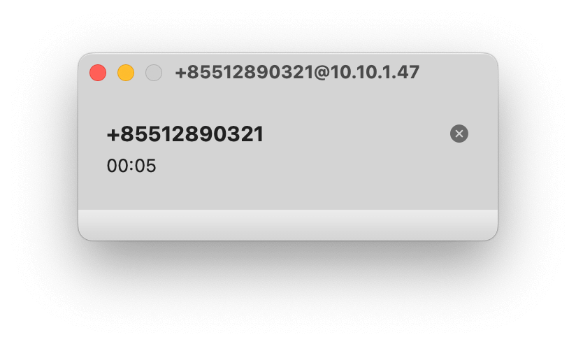

Before we begin, here is some general terminology that is important for understanding this article.
| Term | Meaning |
|---|---|
| Carrier | A carrier (telecom company, mobile network operator (MNO), aggregator etc) who offers routes to/from the Public Switched Telephone Network (PSTN). E.g. AT&T, Verizon |
| BYOC Entity | An individual or organization who has a business relationship with a carrier. E.g. a carrier's customer. BYOC stands for Bring Your Own Carrier. |
| Independent Entity | An individual or organization with their own VoIP/SMS gateway. |
This documentation is intended for Carriers, and BYOC entities, and Independent entities as defined above.
Somleng is an Open Source, white-labeled, Cloud Communications Platform as a Service (CPaaS), and Telco-as-a-Service (TaaS) featuring programmable voice and SMS.
There are a number of different use-cases depending on your role as a Carrier, BYOC entity or Independent entity as defined above.
Here are some common use-cases:
It's also possible for both BYOC and Independent entities to create their own branded CPaaS with Somleng by leveraging their existing connection to a carrier or VoIP/SMS Gateway.
We highly recommend trying out Somleng by signing up for a free carrier account , then working through the tutorials. This will allow you explore and understand Somleng's features without having to worry about installing the full-stack on your local machine.
If you are looking to install Somleng on your local machine, please read the Getting Started Guide .
All users are required to setup two factor authentication (2FA) the first time they sign in to the Dashboard. We recommend Authy , Google Authenticator or your password manager to setup 2FA.
This section contains various tutorials which will help you learn more about Somleng's features. We recommend that you complete the tutorials using a free carrier account rather than a local installation.
In this tutorial you will build your own Phone Verification Service which can then be used by your own applications.
Below is an overview of the steps required to complete this tutorial:
In this step you create a new customer account (not to be confused with your carrier account) which will generate a set of credentials used to authenticate to the Verify API.
Perform the following steps:
In this step you create a new phone number. This number will be used to send out verification codes. One phone number can be used to send out verification codes across multiple customer accounts, so there is no need to assign it to the customer account.
Perform the following steps:

In this step you create a new Verification Service and assign it to the account created in Step 1. A Verification Service is the set of common configurations used to create and check verifications.
Perform the following steps:
In this step you create a new SMS Gateway which will handle the delivery of verification codes via SMS. You'll set the SMS Gateway's default sender to the phone number you created in Step 2.
Note: In this step there is no need to connect the SMS gateway to your customer account. The SMS Gateway will handle the delivery of SMS messages across all of your customer accounts.
Perform the following steps:
In this step you create a new SIP Trunk which will handle the delivery of verification codes via phone call. You'll set the SIP Trunk's default sender to the phone number you created in Step 2.
Note: Similar to the SMS Gateway, there is no need to connect the SIP Trunk to your customer account. The SIP Trunk will handle the delivery of voice calls across all of your customer accounts.
Perform the following steps:

In this step you'll run the Somleng SMS Gateway Application on your local machine. This Application connects to the SMS Gateway you created in Step 4, and allows you to take full control of the SMS delivery process.
For this tutorial we will be running the SMS Gateway Application in dummy mode, but you could also run it in another mode (such as smpp or goip) which will allow it to communicate with your local SMS Gateway infrastructure.
Use the following command to run the Somleng SMS Gateway Application on your local machine. Make sure you replace <replace-me-with-your-device-token> with the SMS gateway device token you created in Step 4.
Note: this step requires that you have Docker already installed. See somleng/somleng-sms-gateway for more info.
$ docker run -p 3210:3210 somleng/sms-gateway somleng-sms-gateway -k <replace-me-with-your-device-token> dummyIn this step you'll register your softphone with the SIP trunk we created in Step 5. This will allow you to receive verification calls on your local machine. In this tutorial we're using the Telephone Softphone Application for Mac, but you can use whichever softphone you prefer.
Note: Instead of registering your softphone, you could register a VoIP gateway that you own or manage with the SIP trunk. This would allow you to send real voice calls.
To configure your softphone perform the following steps:
After you have registered your softphone with the SIP trunk you should see the SIP registration status update to Available on your softphone.
The screenshots below show the SIP registration details from the SIP trunk you created in Step 5 and the corresponding fields in account configuration of the SIP phone.
  In this step you start a new Verification Flow using the somleng-node helper library. In reality this code would be part of you or your customer's application which using your Phone Verification Service.
Note: The somleng-node helper library is just a light-weight wrapper around the twilio-node helper library which enables it to be used with Somleng. This is possible because Somleng's API is compatible with Twilio's API. If we don't yet have an official helper library for your programming language, you should be be able to use the corresponding Twilio helper library with some minimal configuration changes to make it work with Somleng. Alternatively you can connect to Somleng's API directly by following the API docs .
Run the code below substituting the following:
In this step you will receive the verification code via the SMS Gateway Application running on your local machine.
After running the code in the previous step, check your terminal window which is running the SMS Gateway Application. You should see the verification message appear in the logs.
Note: If you're running the SMS Gateway Application in dummy mode, a real SMS will not be sent to the recipients phone.

In this step you resend the verification code via a call.
Re-run the code in step Step 8, but this time
update the
channel to call as shown below. Remember to also set the
accountSid, authToken and
verificationServiceSid like you did in Step 8, if you are using the example below.
In this step you will receive the verification code via a call.
After running the code in the previous step, you should receive a call to the softphone you configured in step Step 7. Answer the call to hear the verification code.
Note: If you don't receive a phone call, check the verification logs in the Dashboard. If you see the call failed, try restarting your softphone and try again. The logs can be found under by clicking on Verifications under the Verify menu.
In this step you complete the flow by confirming the verification code.
Run the code below, substituting the following:
accountSid and authToken from the
account you created in step Step 1.
verificationServiceSid from the verification service you created
in step Step 3.
verificationCode from the verification code received via SMS or
call in Step 9 or Step 11.
After you complete the flow you can view the Verification and the associated logs from the Dashboard.
Congratulations! You have successfully completed the tutorial and built your own phone verification service!
What we learned:
In this tutorial you will learn how to connect Somleng to your Amazon Chime account. This tutorial will build on the previous tutorial, allowing you to send verification codes (and other automated voice calls) to real phone numbers.
It's recommended that you complete the previous tutorial before attempting this one. Some of the steps required to complete this tutorial are the same as the previous tutorial and are not repeated.
The following diagram shows how it works:

Below is an overview of the steps required to complete this tutorial:
In this step you create and configure a new Voice Connector on Amazon Chime.
Perform the following steps:
In this step you create a new phone number on Somleng which matches the phone number you configured in Step 1 on Chime. This phone number will be used as the caller ID when routing calls through Chime.
In addition we'll assign this new number to the customer account that you created in the previous tutorial, so that you can use it can be used to send generic voice calls as well as verification calls.
Note: The phone number you create in this step must exactly match the phone number assigned in the previous step otherwise Chime will reject your calls.
Perform the following steps:
In this step you configure a new SIP Trunk on Somleng to point to the newly created Voice Connector in Step 1.
If you recall from the previous tutorial, we already created a SIP trunk to handle calls to our local softphone. In this step you'll create a new SIP trunk to handle the delivery of calls through Chime. You'll still keep the SIP trunk created in the previous tutorial to handle calls to your softphone.
In a real-world scenario this setup would be useful for routing calls through a different SIP trunk depending on the destination. For example you might want to handle domestic calls through your own VoIP gateway and international calls through Chime.
We can simulate this scenario in reverse, by configuring the new SIP trunk to only handle calls with a certain prefix. All other prefixes will be routed though the default SIP Trunk which points to your local softphone. This way you can test a a call destined to your real phone number, which will be routed though Chime and a call destined to an overseas number, which will be routed to your local softphone.
Perform the following steps:
In this step you'll test a call to your own phone number which should be routed though Chime.
Below is an example of how to use the Phone Calls API using the somleng-node helper library.
The Phone Calls API is different from the Verification API used in the previous tutorial. It allows you to send automated phone calls and control them using TwiML and requires the following parameters:
tofromtwimlRun the code below substituting the following:
accountSid and authToken from the
account you created in the previous tutorial.
to to the phone number which will receive the call.
from to the number you configured in Step 2.
twiml as you like.
You should receive a phone call to your real phone number delivered through the SIP Trunk connected to Chime. Pick up the call and listen to the message. It should match what you have entered in the TwiML instructions above.
Note: Instead of running this code, you could also re-run the Verification Flow as show in the previous tutorial. You should receive the verification code on your real phone number delivered through Chime.
In this step you'll test a call to an international number (with a prefix different from your own number), which should be routed to your local softphone.
In order to complete this step, simply update the to parameter to a
phone number which
does not match the international prefix of your own number. This will result in the SIP
trunk from the
previous tutorial
being selected and
therefore the call should be routed to your local softphone.
Go ahead and run the code again from the previous
step. Remember to replace the to parameter and keep the rest the
same.
You should receive a phone call to your real phone number delivered through the SIP Trunk connected to your local softphone. Pick up the call and listen to the message. It should match what you have entered in the TwiML instructions from the previous step.
Congratulations! You have successfully completed the tutorial and connected Somleng to Chime.
What we learned:
This section contains quick start guides to get you up and running with Somleng.
After following this guide you'll be able to use the Somleng API to initiate control voice calls via your Amazon Chime account.
The following diagram shows how it works:
Below is an overview of the steps required to configure programmable voice via Amazon Chime:

The dashboard can be used to manually provision carrier resources. Use the Carrier API to automate the provisioning of carrier resources.
You must sign in to the dashboard via your subdomain to use Somleng.
The sign in URL is https://your-subdomain.app.somleng.org/users/sign_in.
If you have setup a custom domain all
users may access
the dashboard through your custom domain as well.
All users are required to setup two factor authentication (2FA) the first time they sign in. We recommend Authy , Google Authenticator or your password manager to setup 2FA.
Here you will find various settings for your carrier. Under General, you'll see your company's name, subdomain, website, country and logo. Under Developer, you'll see your Carrier API Key, as well as your webhook URL and signing secret for verifying webhooks . If you've setup a custom domain this will appear under the Custom Domain section.
To update your carrier settings:
Accounts are used by carriers, carrier customers, BYOC users and network providers to send/receive calls and SMS via the Account API .
Typically a carrier would create an account for each of their customers. BYOC users and network providers on the other hand might create an account for each customer or project or just create one global account for their own usage.
There are two types of accounts. Carrier managed and customer managed described below:
| Account type | Description |
|---|---|
| Carrier Managed | Carrier managed accounts are managed by carriers. These types of accounts can be either used by carriers themselves, or by the carrier's customers. |
| Customer Managed | Customer managed accounts are managed by the carrier's customers directly. These types of accounts can be created via the dashboard by specifying an account owner when creating the account. After providing the account owner's name and email address, the owner will be invited to the dashboard and can manage their own account. The customer will also have access to their Account SID and Auth Token. The carrier can still disable and enable customer accounts from the Dashboard. |
To create an account via the Dashboard:
Phone Numbers represent direct inbound dialing (DID) numbers. A phone number can be either an E.164 formatted phone number or a short code. When you create a phone number you can optionally assign it to an account.
Once provisioned and assigned to an account, phone numbers can then be configured for inbound dialing and/or inbound messaging.
Note: This configuration can either be done by the carrier or by an account admin (for customer managed accounts).
To create a phone number via the Dashboard:
Once the phone number has been created, you can configure it. To configure a phone number via the Dashboard:
After you have configured a phone number, the configuration will be shown on the next screen.
In order to bulk import phone numbers, you can upload a CSV file from the Dashboard. Somleng requires a CSV file in the following format:
| Column Header | Content | Possible Values | Example |
|---|---|---|---|
| number | The phone number or short code | E.164 formatted number or short code. e.g. 85512345678 or 1234 | 1234 |
| enabled | Whether to enable or disable the phone number | true or false defaults to true |
true |
| account_sid | Optionally associate an account with the phone number | SID of account to associate | ccdb7202-e487-436c-b964-c3acb7884c8f |
number,enabled,account_sid 1234,false,ccdb7202-e487-436c-b964-c3acb7884c8f 85512345678,true
This section contains everything you need related to configuring programmable Voice.
SIP Trunks are used to configure both inbound and outbound dialing, both to and from Somleng. We define inbound dialing (also known as Direct Inbound Dialing (DID)) as calls terminated by Somleng, and outbound dialing as calls originated by Somleng.
When you create a SIP Trunk you first choose the authentication mode. There are two authentication modes available described below:
| Authentication mode | Description |
|---|---|
| IP Address | Choose this mode if you have a public static IP address and are not behind a NAT. This mode is best suited for carriers and BYOC users. |
| Client Credentials | Choose this mode if you do not have a public static IP address or are behind a NAT. This mode is best suited for network providers. |
Note: This mode is best suited for Carriers and BYOC users.
When you configure a SIP trunk for inbound dialing via IP address authentication the following rules apply:
When you configure a SIP trunk for outbound dialing via IP address authentication the following rules apply:
To configure a SIP trunk via IP address authentication:
After you create your SIP Trunk you'll see the configuration details on the next screen.
Note: This mode is best suited for Network Providers.
When you configure a SIP trunk via client credentials authentication you don't need a public status IP address. Instead you authenticate with Somleng via SIP registration. After you configure a SIP trunk in this mode you will be given a unique set of client credentials which can be used to authenticate with Somleng. These credentials can be used directly when configuring your client gateway.
To configure a SIP trunk via client credentials authentication:
After you create your SIP Trunk you'll see the generated credentials on the next screen.
Text To Speech (TTS), also known as speech synthesis, is a process in which text is converted into a human-sounding voice.
The <Say> verb allows you to provide plain text that Somleng converts to
synthesized speech.
For example, when Somleng executes the following TwiML during a call, the caller hears "Hello
world!"
The synthesized voice the caller hears is the default voice and language of the Somleng Account
(configured in the Account Settings).
<Response>
<Say>Hello world!</Say>
</Response>
<Say> also allows you to modify the language, accent, and voice of the synthesized
speech via the language and voice attributes.
The example below uses Amazon Polly's "Joanna" voice and American English:
<Response>
<Say language="en-US" voice="Polly.Joanna">Hello. I am Joanna and I speak American English!</Say>
</Response>
The language attribute of <Say> also allows you to override the default voice that is
configured for the Somleng Account.
For example, if the account's default TTS voice is Polly.Joanna (Female, en-US), but wish
to use German for a specific call, set the language attribute to de-DE in your
TwiML.
This will choose another voice from the Polly provider which supports German.
<Response>
<Say language="de-DE">Hallo. Ich spreche Deutsch!</Say>
</Response>
Note: the TTS provider is always preserved when using this feature.
For example if the account's default TTS voice is Basic.Kal (Male, en-US), using the TwiML
above won't have any effect
because German is not available in the Basic provider.
You can also use Premium voices which are generated using the latest technology and innovation in synthesized speech, providing the most human-like, expressive and natural-sounding text-to-speech voices possible, with higher quality than Standard voices. The voices in this tier are currently provided by Amazon (Amazon Polly Neural).
As well as setting the default TTS voice to a premium voice in the dashboard, you can also use the
voice attribute to override a premium voice.
For example:
<Response>
<Say voice="Polly.Danielle-Neural">Hello. I am Danielle!</Say>
</Response>
This section contains everything you need related to configuring programmable SMS.
SMS Gateways are used by Somleng for SMS origination and termination. Configuring an SMS Gateway allows you to fully control your own SMS infrastructure.
When you configure an SMS gateway on the Dashboard, you receive a Device Token which uniquely identifies your SMS Gateway. You'll then need to install the Somleng SMS Gateway App on your on-premise or cloud infrastructure. Normally, you'll only need to configure a single SMS Gateway, however if you require multiple SMS gateways, you'll need to run an instance of the for each one. Once the app is running on your local infrastructure and connected to Somleng, the SMS Gateway will show Connected on the Dashboard.
To configure an SMS Gateway:
After you create your SMS Gateway you'll see your Device Token on the next screen.
An SMS gateway channel group allows you control which channels are used by your SMS Gateway to terminate outbound messages. This is mainly used by network providers who connect via a GSM Gateway.
For example let's assume your GSM Gateway has 4 available channels. Now, let's assume you insert 2 SIM cards belong to a carrier called "Smart", 1 SIM card belonging to a carrier called "Metfone", and another SIM card belonging to a carrier called "Cellcard".
Channel groups allow you to specify which messages will be routed through the "Smart" SIM cards, which messages will be routed through the "Metfone" SIM cards and which messages will be routed through the "Cellcard" SIM cards.
To configure a Channel Group:
After you have created your Channel Group you can see the configuration details.
Messaging services allow you to apply messaging configuration to of a group of phone numbers, rather than having to configure each one individually.
To configure an Messaging Service:
After you have configured your messaging service you can see the configuration details.
Carrier owners can invite their colleagues to the dashboard.
To invite a user to the Dashboard:
The user will receive an email inviting them to the dashboard. Users with the owner role can manage other users, update their role and reset their 2FA.
Setting up a custom domain allows you to fully white-label Somleng and brand it for your company. This includes the branded dashboard, emails, Carrier API and Account API references.
When you setup a custom domain you need to setup proxy between your domain and Somleng in order for SSL termination to work correctly. Below we describe two methods for doing this via AWS Cloudfront or Nginx. We recommend using AWS Cloudfront unless your have specific custom requirements or you cannot use AWS.
Follow the steps below to configure your custom domain:
Skip this step if you prefer to use Nginx instead.
In order to make this step easier, we've created a Terraform module automates the configuration and management of your AWS Cloudfront distributions via Terraform .
In order to use the terraform module you need to setup and install Terraform first. We recommend following the Terraform AWS tutorial to get started.
# somleng_proxy.tf
module "somleng_proxy_dashboard" {
source = "github.com/somleng/terraform-aws-cloudfront-reverse-proxy"
host = "your-domain.example.com" # Replace this with your custom domain
origin = "your-domain.app.somleng.org" # Replace this with your Somleng subdomain
origin_custom_headers = [
{
"name" = "X-Forwarded-Host",
"value" = "your-domain.example.com" # Replace with your custom domain
}
]
allowed_origin_request_headers = [
"X-CSRF-Token",
"X-Requested-With"
]
zone_id = aws_route53_zone.example_com.zone_id # Optional. Leave blank if not using route53.
certificate_arn = "existing-certificate-arn" # Optional. Leave blank to create a new certificate.
}
# Optionally configure a custom API endpoint
module "somleng_proxy_api" {
source = "github.com/somleng/terraform-aws-cloudfront-reverse-proxy"
host = "your-api-domain.example.com" # Replace this with your custom API domain
origin = "api.somleng.org"
# DO NOT set X-Forwarded-Host
zone_id = aws_route53_zone.example_com.zone_id # Optional. Leave blank if not using route53.
certificate_arn = "existing-certificate-arn" # Optional. Leave blank to create a new certificate.
}The terraform configuration above will configure two AWS cloudfront distributions (one for the dashboard and one for the API) and optionally create SSL certificates managed by AWS Certificate Manager. If you're using route53 to manage your domain, the module will also create records pointing your custom domain to the AWS cloudfront distributions.
Note: The second module, somleng_proxy_api is optional and only
required
if you want to configure a custom API endpoint.
Although we highly recommend using the terraform module above, you can also configure your Cloudfront distributions from the AWS Console.


Repeat the exact same process above to create a distribution for your custom API domain, with the following modifications:

Skip this step if you prefer to use AWS Cloudfront (recommended) instead.
The following Nginx configuration can be used to setup an Nginx reverse proxy to Somleng.
server {
listen 443;
server_name dashboard.example.com; # replace this with your dashboard domain
ssl_certificate /path/to/your/fullchain.pem;
ssl_certificate_key /path/to/your/privatekey.pem;
location / {
proxy_set_header X-Forwarded-Host dashboard.example.com; # replace this with your dashboard domain
proxy_pass "https://your-subdomain.app.somleng.org:443";
}
}
# Optionally configure a custom API endpoint
# Note: DO NOT set X-Forwarded-Host for your custom API endpoint
server {
listen 443;
server_name api.example.com; # replace this with your api domain
ssl_certificate /path/to/your/fullchain.pem;
ssl_certificate_key /path/to/your/privatekey.pem;
location / {
proxy_pass "https://api.somleng.org:443";
}
}
After you have setup your reverse proxy via AWS Cloudfront or Nginx you can test it out by going to your-domain.example.com. You should see your carrier logo and the sign in page.
Try to sign in and interact with the dashboard. Note if you get a 422 error after signing in, try clearing your browser cookies and try again.
The final step is to configure your custom domain via the Somleng Dashboard. Note: This step should only be done after you have setup and tested your reverse proxy via AWS Cloudfront or Nginx.
After configuring the custom dashboard host, customer transactional emails (such as forgot password, account invitations, etc) will link to your-domain.example.com. Carrier user transaction emails are still linked to your-subdomain.app.somleng.org.
You should also have branded API customer documentation available at your-domain.example.com/docs/api. Setting the custom API endpoint will additionally update the API documentation examples with your your-api.domain.example.com.
Note: The API is always available at api.somleng.org regardless of whether you set a custom API host or not.
Setting up a client gateway allows network providers to use Somleng with their own VoIP gateway which provides access the PSTN, thereby removing the need for a commercial agreement with a carrier.
Note: Being a network provider isn't restricted to carriers or organizations. Any individual can become a network provider as long as they have access to a VoIP Gateway.
A network provider configures their VoIP gateway to connect to Somleng. After the configuration is complete the network provider can originate outbound calls through their VoIP gateway using the Account API and terminate and control inbound calls via TwiML.
The network provider can also use Somleng to offer 3rd party access to the PSTN in their country via their VoIP gateway.
Note: You can still follow along with these instructions even if you don't have a VoIP gateway yet. Instead of configuring you VoIP gateway, you can configure a softphone such as Telephone . This will allow you to create outbound calls through Somleng which should reach your softphone.
Below is an overview of the steps required to configure a client gateway:
Note: Currently Somleng officially supports the following gateways:
Other VoIP gateways may work as well but have not been tested.
If you want to use Somleng with a different gateway please
open an
issue .
Create a new SIP Trunk and configure it with client credentials authentication.

After you have created a SIP trunk you will see your client credentials on the next screen:
Create a new Account to obtain your Account SID and Auth Token for outbound dialing.
Note: You don't need explicity associate the account with the SIP trunk you created in the previous step. Somleng will automatically select the SIP trunk when a call is created or received.
After you have created your account, the SID and Auth Token are shown on the next screen:
Create a new Phone Number and configure it for inbound dialing.
After you have created your phone number, you can configure it on the next screen:

After you have completed the previous steps, you can now configure you VoIP gateway to connect to Somleng. Below is the configuration instructions for the following VoIP gateways:
Follow the instructions below to configure the GoIP gateway to connect to Somleng.
Note: Before completing this step, we recommend that you test out the GoIP gateway in isolation by inserting a SIM card into the device and making a call to the number in the device. The internal IVR of the GoIP gateway should answer the call.
In order to configure the GoIP gateway for inbound dialing, we need to turn off the in-built IVR.
The next step is to configure the GoIP gateway to register with Somleng. There are 3 different modes of configuration depending on your circumstances. Please refer to the GoIP User Manual for more information about the different configuration modes and the channel selection algorithms.
| Config Mode | Description |
|---|---|
| Single Server Mode |
Use this mode to associate all channels on your GoIP gateway to a single SIP Trunk on
Somleng.
This mode is best if you only have one group of SIM cards and you want to route evenly between all of them. |
| Config by Line |
Use this mode to associate a single channel on your GoIP gateway to a single SIP Trunk on
Somleng.
Note: This mode requires you so set a Routing Prefix for each channel. |
| Config by Group |
Use this mode to associate a group of channels on your GoIP gateway to a single SIP trunk on
Somleng.
This mode is useful if you want to route to a different group of SIM cards based on the number prefix. See Advanced Routing Configuration for more info. |
Note: If you choose Config by Line or Config by Group you'll need to repeat the instructions above for each channel or group.
Configure DTMF Signaling under the Advance VoIP section.
Configure caller-id forward mode and VoIP forwarding number.
Note: Repeat this step for each channel you need to configure.
Reboot, then test your configuration.
Let's say you have a GoIP-8 with 3 groups of SIM Cards from 3 different mobile operators. Assume you have 4 SIM cards from Telco A, 3 SIM cards from Telco B, and 1 SIM Card from Telco C and you want to route calls from Telco A to group 1, Telco B to group 2 and Telco C to group 3 according to the table below.
| No. of SIM cards | Telco | Prefixes | Group | Lines |
|---|---|---|---|---|
| 4 | Telco A | 85510, 85515, 85516 | Group 1 | Lines 1-4 |
| 3 | Telco B | 85531, 85571, 85597 | Group 2 | Lines 5-7 |
| 1 | Telco C | 85511, 85512, 85517 | Group 3 | Line 8 |
In order to handle this situation complete the following steps.
Configure 3 separate SIP Trunks (one for each Telco) as per the instructions in Step 1 of the Client Configuration Guide.
For each SIP trunk specify:
Configure Basic VoIP configuration for each group created above, as per the instructions in Step 2 of the GoIP Configuration Guide.
For each group specify:
Configure Call Out configuration for each channel.
For each channel, specify a Dial Plan to remove the routing prefix setup in the previous step. This removes the prefix before calling out.
Below is a list of additional resources for the GoIP Gateway.
Setting up an SMS Gateway allows network providers to provide programmable SMS through their own SMS infrastructure.
SMS infrastructure can mean anything from an API connection to a provider that you manage, a simple GSM Modem, or an SMPP connection to a carrier.
Note: Providing programmable SMS as a network provider isn't restricted to carriers or organizations. Any individual can become a network provider as long as they have access to their own SMS infrastructure.

Network providers connect to Somleng via Somleng's SMS Gateway App installed on-premise, or on the cloud infrastructure managed by the network provider.
Customers can then use the Account API to send and receive SMS though the network provider's SMS infrastructure.
Below is an overview of the steps required to configure an SMS gateway:
Create an SMS gateway via the Dashboard.
After you create your SMS Gateway you'll see your Device Token on the next screen. You'll need this later in Step 4 when you install the SMS Gateway App.
Create an Account via the Dashboard.
Note: You can skip this step if you already have a carrier account setup.
You'll need to reference this account when you configure a Phone Number in Step 3 and when testing an outbound message in Step 5.
Create a new Phone Number and configure it for inbound messaging.
After you have created your phone number, you can configure it on the next screen:
After you have configured your phone number you can review the configuration on the next screen:
The Somleng SMS Gateway App . is as a gateway between Somleng and your SMS infrastructure.
Detailed instructions on how to install, configure and deploy the app can be found on the Somleng SMS Gateway Github repository . You'll need the Device Token from Step 1. to connect the SMS Gateway App to Somleng.
Once the SMS Gateway app is configured and successfully connected to Somleng, you should see the connection status show Connected the Dashboard.
You can use the Account API to test sending an outbound SMS. Replacing the ACCOUNT-SID and AUTH-TOKEN with the information from the account you created in Step 2 you can use the following code to send an SMS:
curl 'https://api.somleng.org/2010-04-01/Accounts/ACCOUNT-SID/Messages.json' -X POST \
--data-urlencode 'To=+855715100860' \
--data-urlencode 'From=+85568308531' \
--data-urlencode 'Body=Hello from Somleng' \
-u ACCOUNT-SID:AUTH-TOKEN
From parameter must match the phone number you created in
Step 3.
You should see the message appear in the Messages section of the Dashboard.
In order to test an inbound SMS, simply send a message to the number you configured in Step 3.
If you have configured your phone number correctly you should see the message appear in the Messages section of the Dashboard as shown in Step 5.
If you don't see the message on the Dashboard, you can check the Error Logs section of the Dashboard.
If you need more control over which channels outbound SMS are delivered though, you can configure one or more Channel Groups.
Instead of configuring each phone number individually, like we did in Step 3, you can configure a Messaging Service with shared configuration and apply it to multiple phone numbers.
In IP address authentication mode SIP and RTP from Somleng is sent through a NAT Gateway. This means that the ports specified in the SDP in the SIP Invite from Somleng are unreachable which normally causes one-way audio issues. To work-around this problem, it is required that you enable Symmetric Latching and NAT traversal in your configuration.
Symmetric RTP means that the IP address and port pair used by an outbound RTP flow is reused for the inbound flow. The IP address and port are learned when the initial RTP flow is received on your device. The flow's source address and port are latched onto and used as the destination for the RTP sourced by the other side of the call. The IP address and port in the c line and m line respectively in the SDP message are ignored.
If your configuration does not support symmetric latching we can configure your account to use a symmetric NAT. Currently this option is not configurable on the dashboard. Please contact us for assistance.